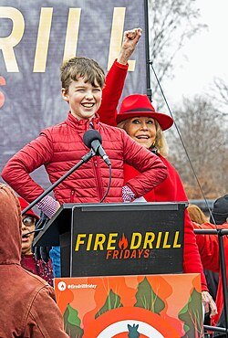

Dans Young Sheldon, Sheldon Cooper n'est pas seulement un "robot" génial et agaçant. C'est un petit garçon qui essaie de trouver sa place dans un monde où il est, selon ses propres mots, un neutrino seul dans une soupe de matière ordinaire.
Mary Cooper est la force qui maintient la famille unie. Elle est l'antithèse de Sheldon : là où il voit des faits, elle voit de la foi. Bien qu'elle puisse être jugée sévère ou favoritisante, la série montre qu'elle agit par un amour profond, essayant de protéger un enfant extraordinaire dans un monde qui ne l'est pas.
George Cooper Sr. est l'ancre de la famille. C'est un homme bon, imparfait et fatigué, qui porte le poids du monde sur ses épaules pour que ses enfants, et surtout Sheldon, puissent s'envoler.
Georgie Cooper est la preuve qu'il n'y a pas besoin d'être un génie des sciences pour réussir. Il est loyal, bosseur et doté d'un grand cœur sous ses airs de frimeur texan. Il est le ciment pragmatique de la famille quand tout le monde perd la tête.
Missy Cooper est l'héroïne de l'ombre de la série. Elle est drôle, perspicace et incroyablement résiliente. Sans son ancrage dans la réalité et sa capacité à remettre Sheldon à sa place, la vie de la famille Cooper serait invivable. Elle prouve qu'on peut être un génie sans savoir résoudre une équation.
Connie "Meemaw" Tucker est la touche de "rock'n'roll" dans la vie des Cooper. Elle prouve qu'on peut vieillir sans devenir ennuyeux. Elle est le parfait contrepoids à la rigidité de sa fille Mary et la meilleure alliée de ses petits-enfants pour naviguer dans les eaux troubles de l'adolescence.
Le Dr. Sheldon Cooper (Adulte) n'est pas juste une voix off ; c'est la conscience de la série. C'est un homme qui a appris (lentement) à aimer sa famille imparfaite pour ce qu'elle était, et non pour ce qu'il aurait voulu qu'elle soit. Sa narration transforme une comédie sur un enfant bizarre en une histoire touchante sur le souvenir, le deuil et l'amour familial.
Le Pasteur Jeff est l'incarnation de l'église de petite ville : accueillant en surface, mais rigide sur les dogmes. Il sert de parfait "sparring-partner" à Sheldon : là où Sheldon apporte la science froide, Jeff apporte la foi aveugle (et souvent maladroite). C'est un personnage drôle qui finit par révéler les limites de la communauté religieuse de Medford.
Le Dr John Sturgis est le grand-père spirituel que Sheldon n'a jamais eu. C'est un personnage doux, drôle et tragique qui enseigne à Sheldon (et au public) que l'intelligence ne protège pas de la solitude ou de la maladie mentale, mais que la gentillesse est universelle.
Mandy McAllister est le personnage qui ancre la série dans une réalité adulte. Elle n'est pas là pour les blagues de physique, mais pour traiter de sujets comme la parentalité imprévue, les conflits de classe sociale et la rédemption familiale. Elle prouve que parfois, les plans de vie ratés mènent aux meilleures destinations.